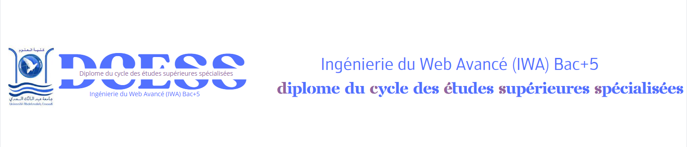

Accueill -
Objectif-
Débouchée-
programme-
contact -
Pré-inscription
Objectif
L’objectif de la formation est de Former des développeurs d’applications web et mobiles (Bac +5) maîtrisant les technologies les plus demandées dans le marché d’emploi au niveau national et international.
Plus spécifiquement, l’objectif est des former des programmeurs capable de:
- Développer des applications frontend et backend.
- Développer des bases de données pour le web.
- Développer avec les CMS.
- Héberger et administrer des sites web.
- Développer en cloud.
- Monter et administrer des plateformes IoT.
- Développer des applications mobiles.
- Préparer et suivre des chartes graphiques.
- Maîtriser les processus et les outils de gestion de projet.
- >Maîtriser les soft skills.
- Maîtriser les outils de test de la qualité, des vulnérabilités et des performances des applications.